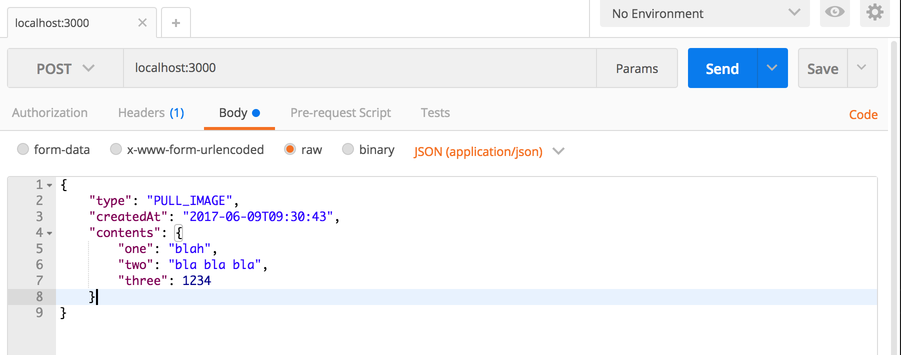
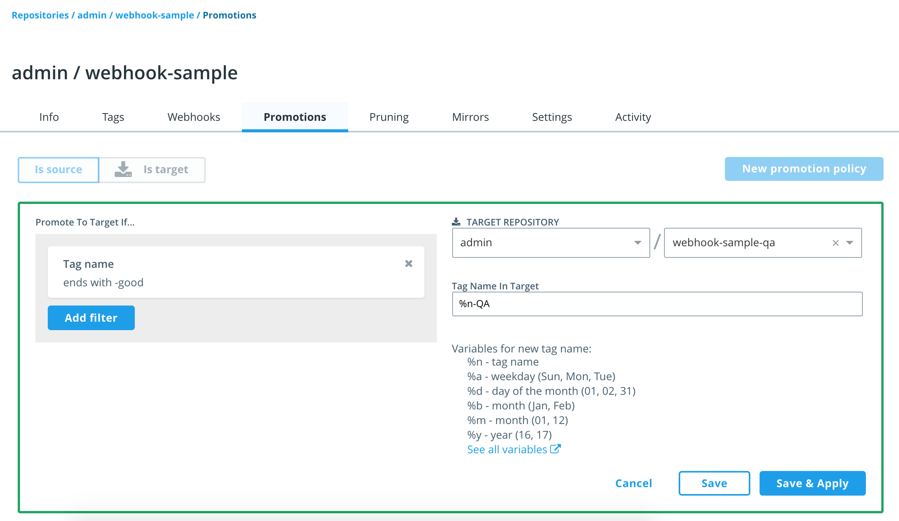

Image Promotion & Webhooks
For the following exercises define an environment variable with your Docker ID in your development machine:
ubuntu@infra:~$ export USER_ID=<your Docker Store ID>
Pre-requisites:
- UCP as described in Installing UCP.
- DTR as described in Installing DTR.
Using Webhooks
In this exercise we will create a service that will be triggered by a Webhook defined in DTR.
Creating the Service
First we will assemble a simple app that logs some information about POST requests received, before setting this up as a service and firing webhooks at it.
On your development machine, open the file
dtr-ci-cd/webhooks/src/server.js. It is a Node JS/Express JS API with a POST endpoint defined as follows:... app.post('/',function(req,res){ var hostname = os.hostname(); console.log('Host: '+hostname+' got triggered with:'); console.log(' type: '+req.body.type); console.log(' createdAt: '+req.body.createdAt); console.log(' contents: '+JSON.stringify(req.body.contents, null, 2)); console.log('------------------------'); console.log('Full body: '+JSON.stringify(req.body, null, 2)); res.send('OK'); }); ...Open the file
dtr-ci-cd/webhooks/package.json. It should contain:{ "name": "WebhookSample", "version": "1.0.0", "description": "Demo app for Webhooks", "main": "server.js", "scripts": { "start": "node src/server.js", "test": "echo \"Error: no test specified\" && exit 1" }, "dependencies": { "express": "^4.14.1", "body-parser": "^1.9.2" } }To the
Dockerfilein thedtr-ci-cd/webhooksfolder add the following instructions to build the container image:FROM node:8-alpine # for edit-and-continue only RUN npm install nodemon -g RUN mkdir /app WORKDIR /app COPY package.json ./ RUN npm install COPY ./src ./src EXPOSE 3000 CMD ["npm","start"]To the file
docker-compose.ymlin thedtr-ci-cd/webhooksfolder add:version: '3.1' services: sut: build: . volumes: - ./src:/app/src ports: - "3000:3000" command: nodemon ./src/server.js 0.0.0.0:3000Gist: http://bit.ly/2Gg61SR
note the use of
nodemonas we saw before, to create an edit and continue experience if we want to manipulate our app while it's running in a container. Windows users, don't forget the additional-Lflag if necessary.Now run the app to test it:
ubuntu@infra:~/ddev-labs/dtr-ci-cd/webhooks$ docker-compose up --buildUse a REST client such as Postman (for Chrome) to send a POST request to
localhost:3000with the followingbody(see below forcurlequivalent):{ "type": "PULL_IMAGE", "createdAt": "2017-06-09T09:30:43", "contents": { "one": "blah", "two": "bla bla bla", "three": 1234 } }Gist: http://bit.ly/2uDWIHP
and a
header:Content-Type: application/json/
To do the same thing via
curl, place the above json in a filepayload.jsonand do:ubuntu@infra:~/ddev-labs/dtr-ci-cd/webhooks$ curl -d @payload.json \ -H "Content-Type:application/json" localhost:3000In the container log you should see something like this:
Attaching to webhooks_sut_1 sut_1 | [nodemon] 1.17.2 sut_1 | [nodemon] to restart at any time, enter `rs` sut_1 | [nodemon] watching: *.* sut_1 | [nodemon] starting `node ./src/server.js 0.0.0.0:3000` sut_1 | Running at Port 3000 sut_1 | Host: c76ea851f5f7 got triggered with: sut_1 | type: PULL_IMAGE sut_1 | createdAt: 2017-06-09T09:30:43 sut_1 | contents: { sut_1 | "one": "blah", sut_1 | "two": "bla bla bla", sut_1 | "three": 1234 sut_1 | } sut_1 | ------------------------ sut_1 | Full body: { sut_1 | "type": "PULL_IMAGE", sut_1 | "createdAt": "2017-06-09T09:30:43", sut_1 | "contents": { sut_1 | "one": "blah", sut_1 | "two": "bla bla bla", sut_1 | "three": 1234 sut_1 | } sut_1 | }Now we want to build and push an image of this app, so we can pull it into our UCP cluster:
ubuntu@infra:~/ddev-labs/dtr-ci-cd/webhooks$ docker image build \ -t ${USER_ID}/webhook-sample:1.0 . ubuntu@infra:~/ddev-labs/dtr-ci-cd/webhooks$ docker image push \ ${USER_ID}/webhook-sample:1.0You might need to login to Docker Hub with
docker loginto be able to push your image.On the UCP manager
ucp-manager, run a service using the above image:[centos@ucp-manager ~]$ export USER_ID=<your Docker ID> [centos@ucp-manager ~]$ docker service create --name webhook-sample \ --detach=false --publish 3000:3000 \ ${USER_ID}/webhook-sample:1.0Again use a REST client like Postman or
curlto trigger the service with a test payload. This time we have to use the public IP address or DNS of any of our swarm nodes instead oflocalhost.Back on one of the UCP manager nodes, analyze the log generated by the service:
[centos@ucp-manager ~]$ docker service logs webhook-sampleIt should show the same sort of record as above; this service is now ready to receive webhooks from DTR.
Registering the Webhook
Login to your DTR (UI).
Create a repository
admin/webhook-sample.Navigate to the repository details and select the tab Webhooks.
Click the button New Webhook.
For NOTIFICATIONS TO RECEIVE select the value Tag pushed to repository and for WEBHOOK URL enter
http://<UCP_FQDN>:3000.Click the link Test and then check the service logs and find out whether or not the callback was successfully executed.
Click Save back on the webhook dialog to create the webhook.
Triggering the Webhook
Pull an image from Docker Store:
[centos@ucp-manager ~]$ docker image pull centos:7Tag the image:
[centos@ucp-manager ~]$ docker image tag \ centos:7 ${DTR_FQDN}:4443/admin/webhook-sample:1.0Push the image to DTR:
[centos@ucp-manager ~]$ docker image push ${DTR_FQDN}:4443/admin/webhook-sample:1.0Now analyze the log of our
webhook-sampleservice running in the swarm:[centos@ucp-manager ~]$ docker service logs webhook-sampleYou should see log entries indicating that DTR posted a webhook to the service, for example:
webhook-sample.1.n7n35ci3ahun@node | Host: deb12fb57621 got triggered with: webhook-sample.1.n7n35ci3ahun@node | type: TAG_PUSH webhook-sample.1.n7n35ci3ahun@node | createdAt: 2017-07-18T19:04:35.240532079Z webhook-sample.1.n7n35ci3ahun@node | contents: { webhook-sample.1.n7n35ci3ahun@node | "namespace": "admin", webhook-sample.1.n7n35ci3ahun@node | "repository": "webhook-sample", webhook-sample.1.n7n35ci3ahun@node | "tag": "1.0", webhook-sample.1.n7n35ci3ahun@node | "digest": "sha256:89751557f508153f133a6f6750e87f871506c0ac76a245277bb7b677e7f65d79", webhook-sample.1.n7n35ci3ahun@node | "imageName": "admin/webhook-sample:1.0", webhook-sample.1.n7n35ci3ahun@node | "os": "linux", webhook-sample.1.n7n35ci3ahun@node | "architecture": "amd64", webhook-sample.1.n7n35ci3ahun@node | "author": "admin", webhook-sample.1.n7n35ci3ahun@node | "pushedAt": "2017-07-18T19:04:35.213817243Z" webhook-sample.1.n7n35ci3ahun@node | } webhook-sample.1.n7n35ci3ahun@node | ------------------------ webhook-sample.1.n7n35ci3ahun@node | Full body: { webhook-sample.1.n7n35ci3ahun@node | "type": "TAG_PUSH", webhook-sample.1.n7n35ci3ahun@node | "createdAt": "2017-07-18T19:04:35.240532079Z", webhook-sample.1.n7n35ci3ahun@node | "contents": { webhook-sample.1.n7n35ci3ahun@node | "namespace": "engineering", webhook-sample.1.n7n35ci3ahun@node | "repository": "webhook-sample", webhook-sample.1.n7n35ci3ahun@node | "tag": "1.0", webhook-sample.1.n7n35ci3ahun@node | "digest": "sha256:89751557f508153f133a6f6750e87f871506c0ac76a245277bb7b677e7f65d79", webhook-sample.1.n7n35ci3ahun@node | "imageName": "admin/webhook-sample:1.0", webhook-sample.1.n7n35ci3ahun@node | "os": "linux", webhook-sample.1.n7n35ci3ahun@node | "architecture": "amd64", webhook-sample.1.n7n35ci3ahun@node | "author": "admin", webhook-sample.1.n7n35ci3ahun@node | "pushedAt": "2017-07-18T19:04:35.213817243Z" webhook-sample.1.n7n35ci3ahun@node | }, webhook-sample.1.n7n35ci3ahun@node | "location": "/repositories/admin/webhook-sample/tags/1.0" webhook-sample.1.n7n35ci3ahun@node | }Metadata about the image push is posted to the address we specified in the webhook definition.
Configuring Image Promotion
In addition to posting metadata triggered by events, DTR can also rename and / or re-tag an image based on similar events, in order to track its progress through your pipelines.
In DTR create a repository
admin/webhook-sample-qa.Navigate to the repository
admin/webhook-sampleand select the tab Promotions.Make sure Is Source is selected and click New promotion policy.
From the section PROMOTE TO TARGET IF... select Tag Name. Then select Tag name ends with and enter
-goodas value and click Add.Select
admin/webhook-sample-qaas TARGET REPOSITORY.Enter
%n-QAin TAG NAME IN TARGET.Click Save and Apply.
/
Tag an image such as that it will trigger promotion when pushed:
[centos@ucp-manager ~]$ docker image tag centos:7 \ ${DTR_FQDN}:4443/admin/webhook-sample:1.0-goodPush the image:
[centos@ucp-manager ~]$ docker image push \ ${DTR_FQDN}:4443/admin/webhook-sample:1.0-goodIn DTR double check that the image has been stored in
admin/webhook-sampleand also been promoted toadmin/webhook-sample-qa.Optional: Configure a webhook for the repository
admin/webhook-sample-qaand verify that it gets triggered when an image is promoted to this repo.
Conclusion
Taken together, webhooks and image promotion allow us to use Docker Trusted Registry as the backbone of a CI/CD pipeline. As images are pushed to DTR by a build server, DTR can fire webhooks to kick off testing pipelines, and as images pass stages in that pipeline, they can be automatically re-tagged or renamed to clearly indicate to users the stage to which they have progressed in testing. It's even possible to promote, or 'mirror', an image from one DTR to another, so that once testing is complete, the final, production ready image can be promoted into a totally separate DTR reserved only for production.